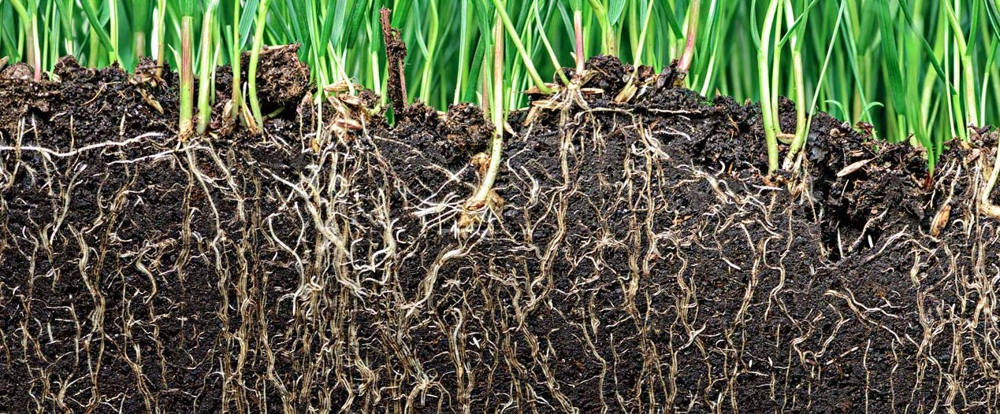

Stanford University Water in the West Program
June 2016 - Dec 2016
Researched the process of groundwater management agency formation in California in relation to the 2014 Sustainable Groundwater Management Act. Read and summarized court cases, read and collated information from agency reports, analyzed survey results, and conducted case studies on water management in counties and groundwater basins.
READ MORE »

Stanford University Welander Lab
June 2015 - Feb 2016
Worked on a project characterizing the microbial diversity and gene abundance of environmental soil samples. Techniques include DNA extraction and purification, polymerase chain reaction, cloning, growing cultures, gene sequence analysis, and phylogenetic tree building. Learned about metagenomic and metatranscriptomic analyses and gained experience creating experiments. Presented a poster at the American Geophysical Union Fall Meeting and wrote a technical research
paper.